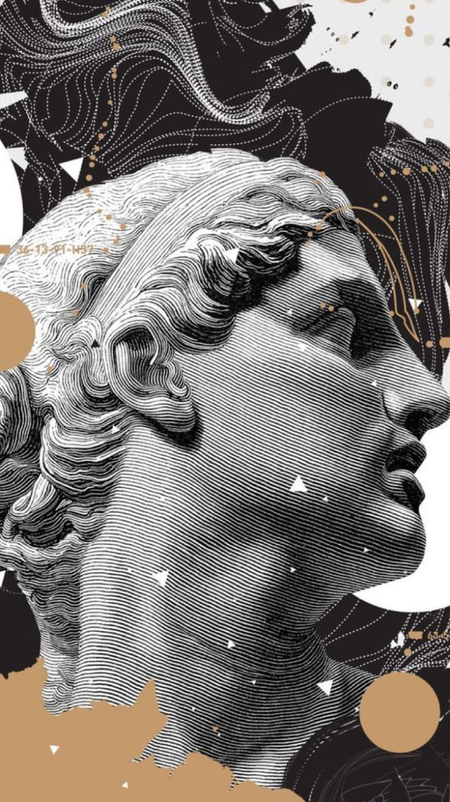

Архитектура
Архитектура — форма творчества, направленная на создание монументальных сооружений для деятельности и жизни людей. При этом плоды творчества должны отвечать понятиям эстетики и духовным потребностям людей. Форму сооружения во многом определяют погодные и климатические условия, сейсмические показатели, ландшафтные характеристики и среднее количество солнечных дней в году.
Изобразительное искусство
Изобразительное искусство включает в себя целую группу форм творчества, которые визуально воспринимают действительность. Произведения изобразительного искусства запечатлевают предметную форму окружающего мира, которая не меняется даже при изменении пространства и времени. В ряд изобразительных искусств включают скульптуру, графику и живопись.
Графика
Графика — вид искусства, основанный на возможности создания художественных форм при использовании разноформатных штрихов, линий, а также пятен, которые наносятся на определённую поверхность. Графика появилась раньше живописи, об этом свидетельствует тот факт, что сначала люди научились запечатлевать только очертания предметов и их формы, а уже позже изображать их цвета и объёмные формы.
Живопись

Живопись — изображение реального мира в плоскости. Живопись представляет собой цветное изображение реального мира на плоской поверхности. Живопись во многом определяет воображение и пространственное мышление художника. Подразделения живописи: Монументальная. В эту группу относят фрески, то есть изображения, наносимые на сырую штукатурку при помощи разведённой в воде краски. Также сюда включают мозаику, которая представляет собой изображение из цветных стёкол или камней. Станковая. Эта живопись проявляется в создании полотна на мольберте.